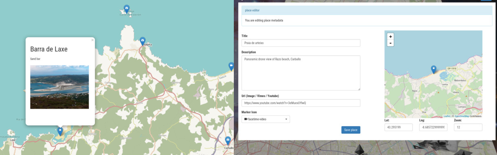

Mapas en blockchain?
Chainmaps es un sistema de geocaching web, descentralizado y basado en el blockchain de ethereum. Su propósito es crear mapas imposibles de censurar por terceras partes. Es ideal para activistas, organizaciones independientes o usuarios que no quieren ceder sus datos a corporaciones.
 Example map
Como funciona
La aplicación es ejecutada en un navegador web, accediendo a chainmaps.net o desde una versión descargada en formato ZIP. Funciona en html/js sin necesidad de un backend, es decir, no requiere de un servidor web para funcionar. Tampoco utiliza cookies ni traza la información del usuario de ninguna otra forma.
La versión online se ejecuta contra un nodo de ethereum que nos facilita infura.io, mientras que la versión descargable puede ser configurada para utilizarse contra nuestro propio nodo local, permitiendo seguir siendo utilizada ante un intento de censura de la web.
Contacto: chainmaps[at]yandex.com
Versión de pruebas
Si tienes interés en probar el software, dispone de una versión que no consume créditos reales de ethereum y se ejecuta contra la red de pruebas Ethereum Ropsten http://testnet.chainmaps.net
He creado una serie de claves privadas de cuentas ethereum (Ropsten) con crédito para que os resulte más fácil hacer las pruebas que considereis necesarias.
- e339835fa666d1c9e9de7000f64bc18d798ef4b93edae808c8e9e8ebc215b6a1
- 5db9caed17bad40e5682f69fe7ddc167d491e71748b3262ffc1106a208f56cae
- 43378c68de988fa0d13b91bb198e6be8e3eb5f5c79640aa85fc17c564b9ae334
- 59afbde8b7477c0c16fcc5763964d5bd39b34e0e763ec98b407723af9bf7ed1d
- 12861fbedcbca862000aa758af8e5a7d8319075d041ccdbe4679e6c0722edc70